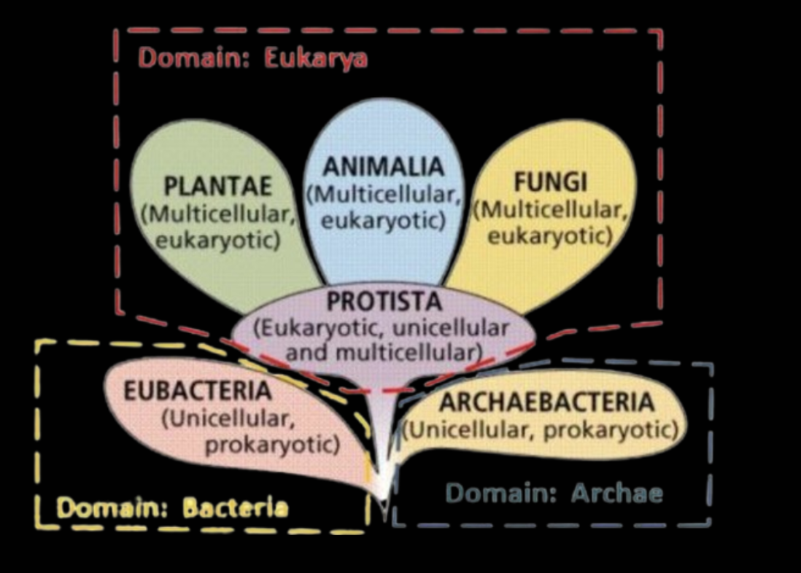
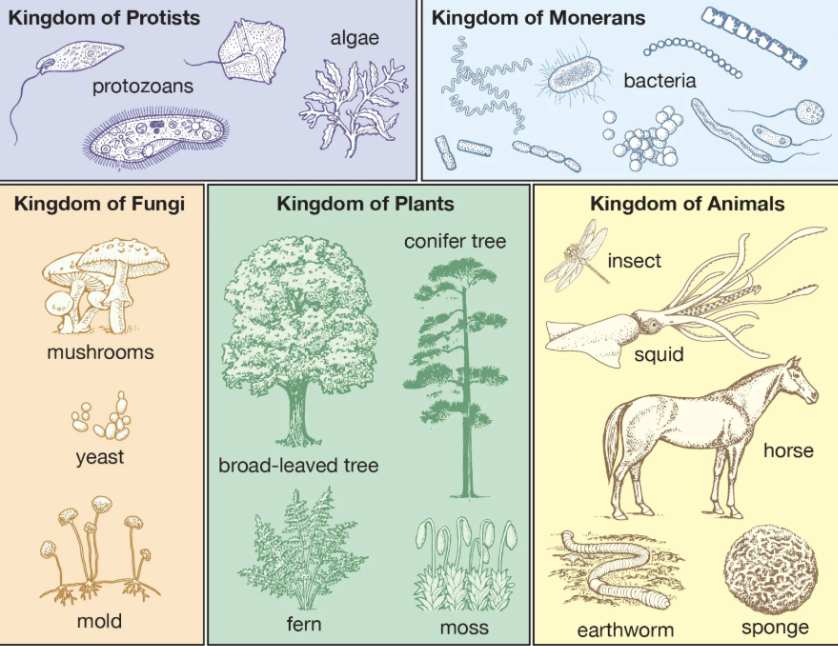
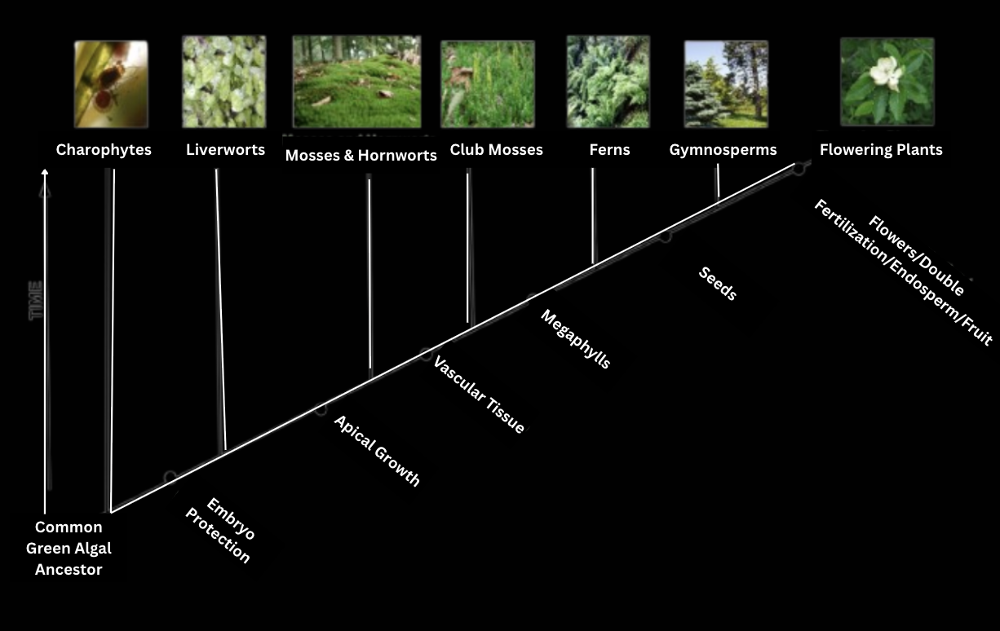
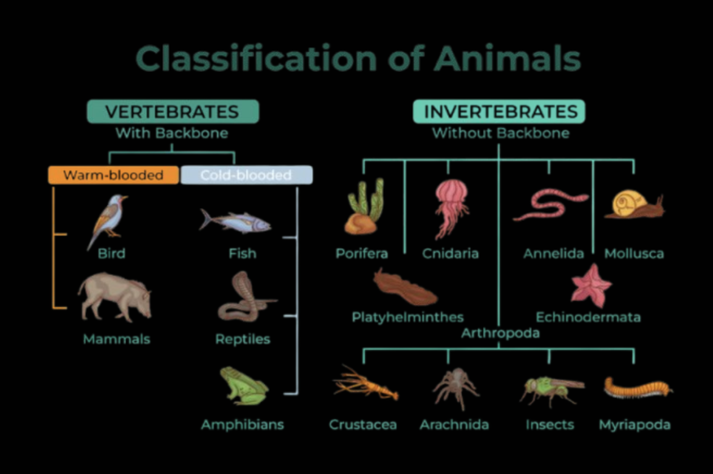

The main levels of taxonomy, from broadest to most specific are as follows: Domain; Kingdom; Phylum; Class; Order; Family; Genus; Species
In this lesson, we will focus on Domain and Kingdom:
Domain is the most inclusive level, with only three distinct groups:
- Bacteria are prokaryotic, peptidoglycan walls, MOST diverse and widespread
- Archaea are prokaryotic, extremophiles (live in extreme conditions), have cell walls but NOT made of peptidoglycan
- Eukarya are eukaryotic, includes: Animals, plants, fungi, and protists (unicellular)

Kingdom is a bit less inclusive than domain, with more distinct groups:
- Protista are eukaryotic, have mitochondria, prefer aquatic/moist environments
- Monera are (bacteria and archaea), unicellular, prokaryotic
- Fungi are eukaryotic, multicellular, chitin cells walls, non-vascular, non-motile, heterotrophic, spore-bearing
- Plantae are eukaryotic, multicellular, cellulose cell walls, autotrophs (perform photosynthesis), reproduce sexually and asexually
- Anamalia are eukaryotic, no cell wall, multicellular, heterotrophs

Let't have a closer look at each kingdom:
Protists:
- Animal-like protists (protozoa)
- Plant-like protists (algae)
- Fungus-like protists (slime molds and water molds)
- Note that protists are NOT monophyletic, but paraphyletic, because they can be found in various lineages (please read systematics unit if you are unfamiliar with these terms)
Monera
- Archaea
- Bacteria
- Cyanobacteria (blue-green algae)
Fungi
- Yeasts
- Mildew
- Molds
- Mushrooms
Plantae
- Thallophyta are simple plants without roots stems or leaves; algae, fungi, lichens
- Bryophyta are absorbing substances directly through their surfaces (lack vascular tissue); dominant gametophyte; mosses
- Pteridophyta are first land plants to have vascular tissues, spore-bearing, ferns, ect.
- Gymnosperms are cone-bearing plants that have naked seeds, trees, shrubs
- Angiosperms are have flowers, bear seeds in fruits

Animalia
- Porifera: sponges; no true-tissue
- Cnidaria: jelly-fish, sea anemones, corals; radial symmetry
- Platyhelminthes: flatworms; parasitic
- Nematoda: roundworms; unsegmented
- Annelida: segmented worms
- Arthropods: LARGEST phylum; insects, crustaceans (jointed appendages and exoskeletons)
- Mollusca: snails, clams, octopuses (soft body - muscular foot and hard shell)
- Echinodermata: Marine animals (starfish, sea urchins); radial symmetry and vascular system
- Chordata: vertebrates (have a backbone)

Chordata
- Agnatha: Jawless fish (lampreys and hagfish).
- Chondrichthyes: Cartilaginous fish (sharks, rays).
- Osteichthyes: Bony fish.
- Amphibia: (frogs, toads, salamanders).
- Reptilia: (snakes, lizards, turtles).
- Aves: (birds).
- Mammalia: (mammals - main distinction between mammals and other vertebrae are mammary glands).
Written by Josephine Ankomah